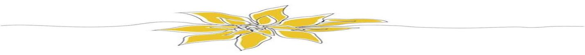

RN
CV de Alex des Totally Spies

Informations
- Adresse - 42 Wallaby Way, Sydney
- Numéro - 06.10.09.96.93
- E-mail - iamsofly@hotmail.fr
-
Site Internet
Experiences
- Publicis Re:source - Juriste IP/IT (alternance)
- CPI Delucenay & Staeffen - Paralegal marques
- ACBM Avocats - Juriste en Propriété Intellectuelle (stage)
Diplômes
- 2018 - Maitrise en Droit des affaires
- 2017 - Licence générale en Droit privé
- 2014 - Baccalauréat mention Économique et Social
Divers
- Compétences informatiques : Pack Office 365, Programmation (langages C, SQL, HTML)
- Langues: Anglais, Espagnol, Lingala, Chinois
- Activités : Sport, Voyage, Lecture, Cuisine, Musique